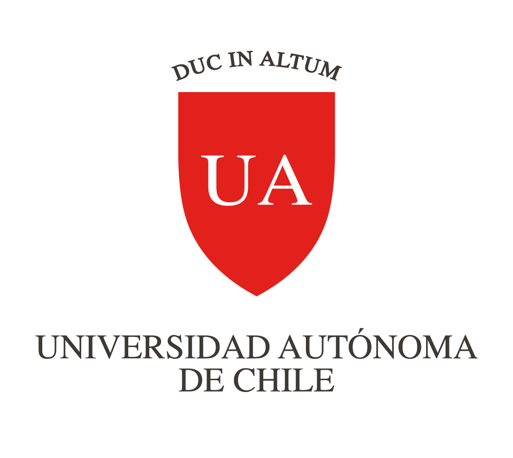
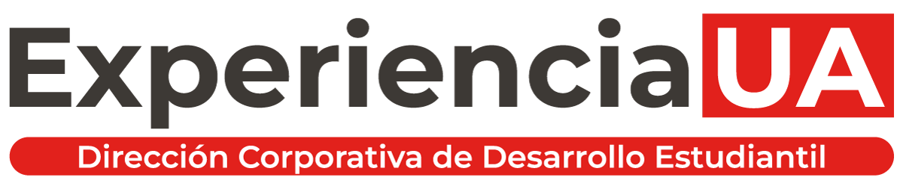

Talleres prácticos
Construcción, programación y experimentación con soluciones robóticas aplicadas a la educación.
 Robótica Educativa
Grupo de Interés · Experiencia UA
Robótica Educativa
Grupo de Interés · Experiencia UA
Universidad Autónoma de Chile · Talca
Un espacio de aprendizaje colaborativo para explorar, diseñar y aplicar la robótica como herramienta pedagógica, creativa y de innovación educativa.


Propósito
El grupo promueve actividades teórico-prácticas que integran la robótica al ámbito educativo mediante talleres, charlas y proyectos aplicados en escuelas y liceos.
Su trabajo busca fortalecer competencias científico-tecnológicas, pensamiento lógico, creatividad e innovación, vinculando el conocimiento universitario con el entorno social.
Qué hacemos
Construcción, programación y experimentación con soluciones robóticas aplicadas a la educación.
Instancias de aprendizaje entre estudiantes, docentes y comunidades escolares interesadas.
Vinculación con niñas, niños y jóvenes para acercar la tecnología a procesos activos e inclusivos.
Participación en eventos donde el estudiantado exhibe creaciones y comparte experiencias.
Participantes
Está dirigido principalmente a estudiantes universitarios interesados en educación, tecnología e innovación, y a la comunidad escolar de la región: docentes, niñas, niños y jóvenes que participan en actividades de vinculación con el medio.
Habilidades
El objetivo es potenciar la apropiación crítica y responsable de la tecnología como medio para mejorar los procesos de enseñanza-aprendizaje.
Marco institucional
Los grupos de interés son asociaciones voluntarias de estudiantes regulares que, motivados por un objetivo común, promueven actividades enmarcadas en la misión, visión, propósitos y principios institucionales.
Su función es promover actividades de interés común en un ambiente de respeto mutuo, representar intereses estudiantiles y orientar sus acciones hacia los principios de la Universidad Autónoma de Chile.
Galería
Una muestra reciente de talleres, encuentros y experiencias del grupo.
Cargando imágenes...
Contacto
Conoce novedades, convocatorias y registros de actividades en Instagram.